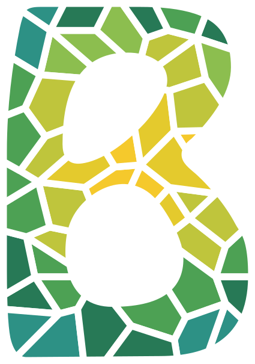
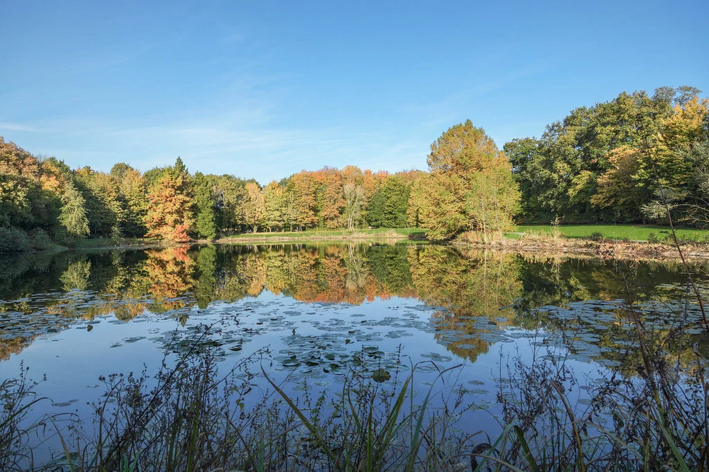

L'événement
La Breizh Backyard, c'est la seule course de Rennes sans distance et sans limite. Le principe tient en une phrase : une boucle de 6,706 km à boucler toutes les heures, jusqu'à ce qu'il ne reste plus qu'un seul coureur.

Toutes les heures, pile, les coureurs repartent pour un nouveau tour. Celui qui ne prend pas le départ, ou ne boucle pas son tour dans l'heure, est éliminé. Le dernier debout l'emporte.
Pas de distance fixée, pas d'heure d'arrivée : la course peut durer une journée comme plusieurs. Le record du monde est de 124 heures, soit plus de 830 km.
La course se déroule au Parc des Gayeulles, à Rennes : forêts, étangs et sentiers nature, en pleine ville.
Entre deux tours, coureurs et accompagnants se retrouvent au camp de base, le cœur de l'événement, avec un ravitaillement pour les coureurs et une buvette pour les accompagnants.
L'organisation
La Breizh Backyard est organisée par l'Association Delta Events : quatre jeunes passionnés de course à pied et de trail, avec l'envie de créer à Rennes un rendez-vous d'ultra-endurance unique.
Personne n'est rémunéré. Chaque apport, en matériel, en produits, en services ou financier, va directement dans l'organisation de la course et l'expérience des coureurs.
Une course en pleine forêt, au cœur d'un grand parc rennais.
Un format où chacun va chercher ses propres limites, heure après heure.
L'entraide entre coureurs et l'ambiance du camp de base, à la bretonne.
Nos besoins
Nous cherchons surtout des partenaires matériels : vos produits, votre équipement ou votre savoir-faire font directement vivre la course. Un soutien financier est aussi le bienvenu.
Boissons, eau, nutrition sportive, fruits, produits locaux, café et boissons chaudes pour tenir la nuit.
Barnums et tentes, tables, chaises, éclairage, électricité, chauffage d'appoint pour la nuit.
Tee-shirts, textile technique, dossards, accessoires remis à chaque participant.
Dotations pour le vainqueur et le dernier à céder, lots pour les coureurs et les bénévoles, bons d'achat.
Banderoles, arche de départ, panneaux, balisage du parcours, affiches et flyers.
Chronométrage, photo et vidéo, sonorisation, transport et logistique de matériel.
Vous avez une autre idée ? Nous sommes ouverts à toute proposition qui colle à l'esprit de la course.
Formules
Vous prenez en charge un poste entier de la course, par exemple tout le ravitaillement ou la tenue des coureurs.
Vous apportez une contribution importante à un poste : produits, matériel ou service.
Vous offrez des lots, des bons d'achat, du petit matériel ou un coup de main.
| Contreparties | Principal | Officiel | Soutien |
|---|---|---|---|
| Logo et lien sur le site, page Sponsors | ✓ | ✓ | ✓ |
| Remerciements sur nos réseaux sociaux | Publication dédiée | Publication dédiée | Publication groupée |
| Remerciements au micro pendant la course | ✓ | ✓ | ✓ |
| Titre « Partenaire officiel » de votre poste | ✓ | ✓ | · |
| Logo sur les banderoles du camp de base | ✓ | ✓ | · |
| Photos et vidéos de la course pour votre communication | ✓ | ✓ | · |
| Logo sur le tee-shirt des coureurs | ✓ | ✓ | · |
| Stand ou présence au camp de base | ✓ | Selon le poste | · |
| Logo sur le dossard | ✓ | · | · |
| Remise d'un prix aux coureurs par vos soins | ✓ | · | · |
Cette grille est un point de départ : nous construisons chaque partenariat avec vous, selon ce que vous pouvez apporter et ce qui compte pour vous.
Contact
Un échange suffit pour voir ce que nous pouvons faire ensemble. Écrivez-nous, nous répondons vite.